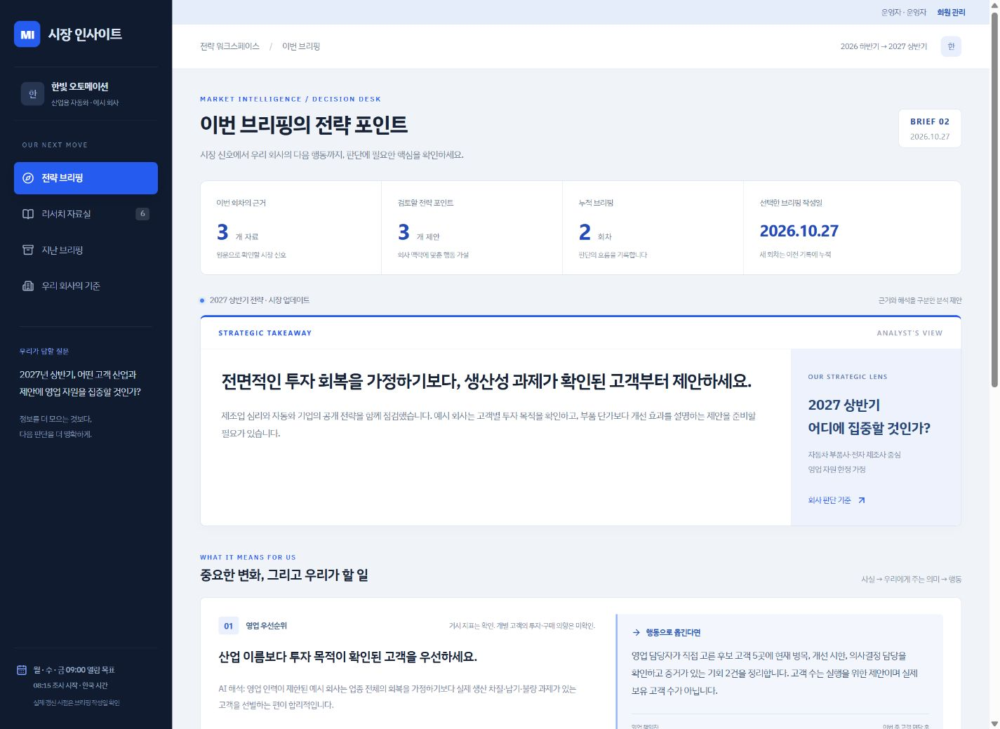

다음 주에는,
내 판단에 도움이 되는 리서치를 만듭니다.
오늘은 내 생각을 말하고 AI와 첫 계획을 세워 보았습니다. 다음 주에는 Codex로 업계·경쟁사·고객 산업을 조사하는 방법을 익히고 반복 조사를 자동화한 뒤, 나와 직원들이 읽기 편한 사이트로 연결합니다. 최종 목표는 직원용 내부 홈페이지입니다. 이번에 만드는 시장 인사이트는 그 안의 첫 번째 영역이며, 이후 업무 안내와 업무 가이드를 더할 수 있도록 큰 구성을 함께 생각합니다.
“어떤 사이트를 만들까?”에 앞서 “어떤 정보를 알면 내가 더 나은 결정을 할 수 있을까?”를 생각해 오세요. 완성된 기획서나 조사 보고서는 필요하지 않습니다.
먼저, 내가 내려야 할 결정 한 가지를 고릅니다
최근 회의에서 답하기 어려웠던 질문, 정보를 찾느라 시간을 쓴 일, 다음 분기에 결정할 일을 떠올려 보세요. 언제까지 무엇을 결정해야 하는지 한 문장으로 적습니다.
고객·영업
2027년 상반기에는 어떤 고객 산업에 영업 시간을 먼저 써야 할까요?
사업·전략
업계 변화 중 우리 상품·서비스 제안에 반영할 것은 무엇일까요?
연말 정리
2026년 하반기 시장 변화를 돌아볼 때, 내년에도 유지하거나 바꿀 가정은 무엇일까요?
이 여덟 가지를 짧게 메모해 오세요
| 생각할 것 | 적어 올 내용 |
|---|---|
| ① 결정할 일 | 언제까지 무엇을 선택하거나 바꾸고 싶은가요? 여러 고민 중 하나만 고릅니다. |
| ② 우리 회사와 내 역할 | 무엇을 팔거나 제공하며, 나는 어떤 일을 하나요? 이번 판단에서 인력·예산·시간 등 고려할 제약은 무엇인가요? |
| ③ 우리 산업과 고객 산업 | 우리 회사가 속한 산업, 주요 고객이 속한 산업을 구분합니다. 관심 있는 경쟁사·비교 기업은 1~2곳이면 됩니다. |
| ④ 평소 보는 정보와 아쉬움 | 자주 방문하는 사이트·뉴스레터·협회·기관 자료는 무엇인가요? 읽고도 내 일의 판단으로 연결되지 않았던 점은 무엇인가요? |
| ⑤ 계속 지켜볼 변화 | 고객의 투자, 경쟁사의 신제품, 수요·가격·정책 변화 등 중요한 신호를 최대 3개 적습니다. 검색 키워드를 몰라도 평소 말로 설명하면 됩니다. |
| ⑥ 정보를 얻은 뒤 할 행동 | 무엇을 알게 되면 누구와 어떤 행동을 할까요? 도움이 됐다는 것을 영업 기회, 제안 개선, 불필요한 조사 시간 감소 등 무엇으로 확인할까요? |
| ⑦ 직원들과 함께 볼 정보 | 어떤 직원들이 무엇을 함께 알았으면 하나요? 전 직원 공통 정보와 특정 부서만 볼 정보를 구분해 보세요. 이후 추가하고 싶은 업무 안내·가이드 메뉴도 1~2개 적습니다. |
| ⑧ 선호하는 화면 | 보기 편했던 대시보드나 웹사이트 주소 또는 화면 캡처를 1~2개 골라 주세요. ‘첫 화면에서 핵심이 보인다’, ‘표로 비교하기 쉽다’처럼 마음에 든 이유를 적습니다. 참고 화면이 없으면 평소 익숙한 사이트로 시작해도 됩니다. |
다음 주에 가져오면 좋은 것
- 필수: 위 내용을 적은 메모 한 장과 실습할 노트북. 정하지 못한 항목은 ‘모르겠음’으로 두셔도 됩니다.
- 있으면 도움: 평소 보는 공개 사이트 주소 2~3개와 최근 궁금했던 기사·보고서 링크 1개. 각 자료를 왜 보는지도 한 줄 적어 주세요.
- 디자인 참고: 선호하는 대시보드·사이트 1~2개의 주소나 캡처와 좋은 이유. 직원들이 처음 화면을 열었을 때 무엇부터 봤으면 하는지도 적어 주세요. 캡처의 개인정보·내부 수치는 가려 주세요.
- 선택: 공개된 회사 소개나 상품·서비스 소개 자료 1개, 1주차에 만든 개인 계획. 실제 회사명을 쓰기 어렵다면 업종·고객 유형만 적어도 됩니다.
수업에서 강사·조교가 회사 맥락을 묻고, 결정할 일을 좁히고, 확인할 공개 출처를 찾는 과정을 돕습니다. 비공개 고객 명단·개인정보·계약서·계정 비밀번호는 준비 자료에서 제외합니다.
메모 예시 · 교육용 가상 회사
산업용 자동화 부품을 공급하고 영업을 맡고 있습니다. 자동차·전자 제조 고객이 주요 대상입니다. 영업 인력이 한정돼 있어 2027년 상반기에 어느 고객 산업을 먼저 공략할지 결정하려 합니다. 평소 산업 뉴스는 읽지만 우리 고객의 투자와 어떻게 연결되는지 어렵습니다. 고객 산업의 투자 신호, 경쟁사의 제안 변화, 생산성 개선 수요를 보고 싶습니다. 결과를 보고 실제로 접촉할 고객과 제안 내용을 정하고 싶습니다.
위 내용은 답안이 아니라 작성 범위를 보여 주는 예시입니다. 고객 투자 계획과 예산은 확인되지 않은 상태로 남깁니다.
다음 주 시장 리서치 수업을 위한 사전 메모를 정리하고 싶습니다. 아직 사이트를 만들거나 본격적인 리서치를 시작하지 마세요. 내가 실제로 결정해야 하는 일을 찾도록 질문을 하나씩 해 주세요. 결정과 시한 → 회사·내 역할·제약 → 우리 산업과 고객 산업 → 평소 보는 자료와 아쉬움 → 지켜볼 변화 → 결과를 보고 할 행동 → 직원들이 함께 볼 정보와 향후 메뉴 → 선호하는 화면과 그 이유 순서로 물어봐 주세요. 최종 목표는 확장 가능한 직원용 내부 홈페이지이고, 이번에는 시장 인사이트 영역부터 만듭니다. 내가 막히면 내 업무에 맞는 예시 2개만 제안하고, 내 답을 확인한 뒤 다음 질문으로 넘어가세요. 모르는 내용은 추측하지 말고 ‘확인 필요’로 남겨 주세요. 마지막에는 수업에 가져갈 메모 한 장, 조사에 참고할 공개 링크, 디자인 참고 화면과 이유로 정리해 주세요.
무엇을 써야 할지 막히면,
내가 일했던 장면부터 떠올립니다.
위 여덟 질문에 길게 답할 필요는 없습니다. 아래 예시를 참고해 각 항목을 1~2문장으로 적으세요. 사전 과제는 여기까지이며, 뒤의 기획·리서치·사이트 예시는 다음 주에 할 일을 이해하기 위한 읽을거리입니다.
| 막연한 시작 | 이렇게 구체화해 보세요 | 왜 필요한가요? |
|---|---|---|
| “산업 동향이 궁금해요.” | “다음 분기 영업 시간을 자동차 고객과 전자 고객 중 어디에 더 쓸지 결정하고 싶어요.” | 무슨 정보를 모을지보다 선택해야 할 일을 정합니다. |
| “우리 회사는 제조업이에요.” | “우리는 자동화 부품을 공급하고 설치를 돕습니다. 저는 영업을 맡고 있으며 신규 고객을 만날 인력이 부족합니다.” | 같은 시장 정보라도 회사의 제품·역할·제약에 따라 의미가 달라집니다. |
| “고객도 제조업이에요.” | “우리 산업은 자동화 장비·부품이고, 고객 산업은 자동차 부품과 전자 제조입니다.” | 우리 경쟁사의 움직임과 고객의 구매 여건을 따로 조사할 수 있습니다. |
| “뉴스를 자주 봐요.” | “협회 소식과 고객사 공지를 보지만, 투자 발표가 우리 제품 수요로 이어지는지는 모르겠습니다.” | 현재의 정보 습관과 부족한 연결을 찾아냅니다. |
| “중요한 건 다 보고 싶어요.” | “고객 산업의 투자 일정, 생산 병목, 경쟁사의 제안 방식 세 가지를 보겠습니다.” | 반복해서 관찰할 수 있는 신호로 줄입니다. |
| “매출을 늘리고 싶어요.” | “조사 후 접촉할 고객 후보를 좁히고 제안서 한 건을 바꾸겠습니다. 실제 상담·제안으로 이어졌는지 기록하겠습니다.” | 매출을 약속하는 대신 결과를 쓸 행동과 확인 기준을 정합니다. |
| “직원들이 다 보면 좋겠어요.” | “전 직원은 주요 변화를, 영업팀은 고객 산업과 제안 기회를 먼저 보게 하고 싶습니다.” | 같은 자료를 누가 어떤 순서로 읽어야 하는지 정합니다. |
| “깔끔한 디자인이 좋아요.” | “첫 화면에 핵심 세 가지가 보이고, 비교표와 원문 링크를 쉽게 찾을 수 있는 구성이 좋습니다.” | 막연한 취향을 실제 화면에서 확인할 기준으로 바꿉니다. |
경영·영업 외 업무라면 이렇게 바꿔보세요
- 전문서비스: 고객 업종의 제도·사업 변화 중 어떤 자문 주제를 다음 달에 먼저 제안할까요?
- 유통·소비재: 고객 수요와 경쟁 상품 변화 중 다음 분기 상품 구성에 반영할 것은 무엇일까요?
- 교육·서비스: 고객 기업의 업무 과제와 경쟁 서비스 변화 중 어떤 제안 주제를 먼저 검증할까요?
실제 자신의 업종을 설명하면 강사·조교가 조사 가능한 질문으로 좁히는 것을 돕습니다. 위 문장을 그대로 자신의 사실로 쓰지는 마세요.
내 사전 메모를 여기서 정리해 보세요
메모는 현재 브라우저에 보관됩니다. 전체 복사 후 1주차 학습 기록이나 본인 문서에 붙여 넣어 보관하세요. 강사에게 자동 제출되지는 않습니다.
디자인 참고는 세 가지를 표시해 가져오세요
- 어디: 마음에 드는 첫 화면, 비교표, 자료실 등 구체 위치.
- 왜: 핵심이 빨리 보이는지, 숫자가 비교되는지, 원문을 쉽게 찾는지.
- 우리 회사에서는: 직원에게 처음 보여줄 정보와 참고할 화면 구성 한 가지.
주소만 가져오는 것보다 캡처에 “이 카드 배치가 좋다”라고 적으면 기획에 도움이 됩니다. 다른 사이트의 문구·로고·자료를 그대로 옮기는 과제는 아닙니다.
1주차의 아이디어에,
판단 기준과 반대 근거를 더합니다.
만드는 것은 쉽게, 만들기 전 고민은 충분히 합니다
처음부터 완벽한 것을 만들 수는 없습니다. 그래도 누가 쓸지, 무엇을 판단할지, 무엇을 보여줄지를 충분히 고민하는 것은 좋은 태도입니다. 그 고민을 혼자 끝내려 하지 말고 AI 파트너에게 이야기해 보세요. AI의 질문에 답하고, 제안을 반박하고, 함께 범위를 다듬는 과정이 기획입니다.
생각나는 기능을 계속 붙이면 화면·자료·권한이 뒤엉켜 결국 크게 다시 만들어야 할 수 있습니다. 수정은 필요합니다. 다만 수정할 때마다 “처음 목적에 필요한가?”, “이번에 할 일인가?”를 AI와 다시 확인하세요.
- 먼저 대화합니다. 회사 상황, 실제 업무 장면, 직원들이 봐야 할 정보와 참고 사이트를 알려줍니다.
- 이번 범위를 합의합니다. 이번에는 인사이트, 이후에는 업무 안내·가이드처럼 지금과 다음을 구분합니다.
- 작은 첫 버전을 봅니다. 계획이 맞는지 확인할 수 있는 최소 화면과 자료 흐름부터 만듭니다.
- 목적에 맞게 수정합니다. 새 아이디어는 바로 모두 붙이지 말고, 필요한 수정과 다음 확장 목록으로 나눕니다.
1주차에는 “어떤 일을 바꾸고 싶은가”를 이야기했습니다. 2주차에는 누구의 어떤 결정인지, 무엇을 확인하면 생각이 바뀌는지, 어디까지 조사하면 충분한지를 더합니다.
| 대화 | 가상 자동화 부품 공급사의 예시 | 남기는 기준 |
|---|---|---|
| AI의 첫 질문 | “이 결과를 보고 어떤 결정을 하려고 하나요?” | 사이트 기능보다 판단 목적 |
| 학습자의 설명 | “내년 상반기에 자동차·전자 고객 중 영업을 어디에 집중할지 고민입니다.” | 대상과 시기 |
| AI의 추가 질문 | “우리 제품이 고객의 어떤 문제를 해결하며, 영업에 어떤 제약이 있나요?” | 제품 적합성과 회사의 조건 |
| 학습자의 설명 | “설치 지원은 가능하지만 영업 인력은 한정돼 있습니다. 고객 예산은 아직 모릅니다.” | 사실과 미확인 구분 |
| AI의 점검 질문 | “산업 투자 발표가 있어도 우리 제품과 관련이 없다면 우선순위를 낮출 수 있나요?” | 결론을 바꿀 반대 근거 |
| 함께 정리 | “두 산업의 투자 목적과 우리 제품 적용 가능성을 비교하고, 고객에게 직접 확인할 질문을 남깁니다.” | 조사 범위와 다음 행동 |
강사·조교는 이렇게 도와드립니다
- “업계 전체”를 조사하려 하면 이번 달에 달라질 결정 하나부터 찾습니다.
- 검색어를 모르겠다면 고객이 구매하거나 투자를 미루게 만드는 사건을 함께 찾습니다.
- 자료가 없다면 공개자료로 확인할 것과 고객·내부 담당자에게 물을 것을 나눕니다.
- 기능이 늘어나면 이번 인사이트 영역과 이후 내부 홈페이지 확장을 구분합니다.
“누구의 어떤 판단을 위해, 무엇을 어디서 조사하고, 결과를 보고 어떤 행동을 할지”를 설명할 수 있습니다. 모르는 항목과 다음 확인 과제가 남아 있어도 됩니다.
준비된 기획 스킬 두 개는 언제 쓰나요? · 선택 자료
기획 인터뷰: 막연한 생각에서 질문 하나를 잡을 때 mw-research-office-hours를 참고합니다. 사업 관점 점검: 계획이 생긴 뒤 가치·가정·범위·행동을 검토할 때 mw-business-plan-review를 참고합니다.
학습자용 기획 스킬 자료는 Garry Tan의 gstack 일부를 참고·변형한 교육용 파생 자료이며 공식 gstack 교육판은 아닙니다. 사용 준비는 수업에서 안내합니다. GitHub 복제나 스킬 설치를 하지 않아도 위의 기획 요청문으로 사전 과제를 할 수 있습니다. 스킬은 질문을 돕는 자료이며 조사 정확도나 사업 성과를 보장하지 않습니다.
지금 만든 리서치 계획을 검토해 주세요. 이 결과로 달라질 결정과 실제 행동이 연결되는지 확인해 주세요. 근거 없는 가정, 결론을 바꿀 반대 근거, 공개자료로 확인할 수 없는 항목을 짚어 주세요. 범위가 넓다면 이번 판단에 꼭 필요한 것부터 좁히는 안을 제시해 주세요. 내가 확정한 내용 / AI의 제안 / 아직 미정인 내용을 구분해 주세요. 사이트 제작·예약 등록은 아직 하지 말고, 중요한 미정 두 가지만 질문해 주세요.
정보량보다,
내 결정에 쓸 근거를 남깁니다.
| 조사 축 | 확인할 질문 | 출처 후보 |
|---|---|---|
| 우리 시장·산업 | 수요·공급·제도·기술 중 이번 결정에 영향을 주는 변화는 무엇인가요? | 공식 통계, 정부·협회·연구기관 자료 |
| 고객 산업 | 고객은 왜 투자·구매를 하거나 미루며, 우리 제품과 어떤 관련이 있나요? | 고객사 공시·공식 발표, 고객 산업 협회 |
| 경쟁사 | 상품·서비스·고객 제안에서 무엇을 바꾸고 있나요? | 공식 제품 페이지, 보도자료, 공개 보고서 |
위 목록은 출처 후보입니다. 실제 읽을 수 있는지, 발행 시점이 맞는지 수업에서 확인합니다. 경쟁사 발표는 해당 기업의 주장이고, 산업 전망은 특정 시점의 전망입니다. 고객 구매 의향은 공개 기사만으로 확정하지 않습니다.
PEST·SWOT·포터 분석은 모두 해야 하나요?
모두 채우는 과제가 아닙니다. 정책·경제·기술 변화가 중요하면 PEST 질문을, 경쟁 구도가 중요하면 포터의 경쟁 관점을, 외부 변화와 우리 역량을 연결할 때는 SWOT 관점을 필요한 만큼 사용합니다. 이름을 외우기보다 이번 결정을 설명하는 질문을 선택합니다.
앞에서 확인한 회사 맥락과 조사 계획에 따라 시장 리서치를 해 주세요. 역할: 우리 회사의 의사결정을 돕는 리서치 담당자입니다. 목적: 합의한 결정에 필요한 근거와 다음 행동을 정리합니다. 범위: 합의한 산업·고객 산업·경쟁사·기간만 우선 조사합니다. 출처: 공식 원문을 우선 열고 발행일·확인일·링크를 남겨 주세요. 결과: 중요한 변화 3개, 각각의 확인한 사실 / 우리 회사에 주는 의미 / 행동·담당·시점 / 불확실성을 정리해 주세요. 사실·기관 전망·AI 해석·우리 회사의 가정을 구분하고, 해석마다 근거 링크를 연결해 주세요. 부족한 자료는 미확인으로 표시하고, 조사 범위를 넓혀야 한다면 이유를 알려 주세요. 아직 사이트를 만들거나 예약·공개 설정을 바꾸지는 마세요.
한 가지 정보가 행동으로 바뀌는 모습
확인한 정보
경쟁사가 생산 운영 문제를 해결하는 자동화 사례를 공개했습니다. 공급사의 공개 발표라는 한계가 있습니다.
우리에게 주는 의미
설치 지원이 가능한 예시 회사는 가격표 외에 고객의 정지시간·불량 문제를 설명하는 제안을 검토할 수 있습니다.
실행할 행동
고객 한 곳의 문제를 먼저 확인하고, 설치 전후에 측정할 항목을 담은 1쪽 제안을 만듭니다. 절감률은 미리 약속하지 않습니다.
위는 준비된 시제품의 해석·행동 예시입니다. 경쟁사의 사례가 우리 고객에게도 같은 효과를 낸다는 뜻은 아닙니다.
자동화 전에 한 회차를 직접 확인합니다
- 조사: 합의한 기준으로 원문을 찾고 읽습니다.
- 저장: 날짜가 있는 새 회차로 남기며 이전 결과를 보존합니다.
- 재조회: 다시 열어 제목·출처·해석·행동이 일치하는지 봅니다.
- 예약: 조사 시작 시각과 직원 열람 시각을 나누어 정합니다.
- 실행 확인: 예약 시각이 지난 뒤 새 회차가 실제로 생겼는지 확인합니다. 조사 실패를 ‘변화 없음’으로 표시하지 않습니다.
예를 들어 월·수·금 09:00에 직원들이 읽으려면 그보다 먼저 조사를 시작하도록 계획합니다. 09:00은 운영 목표이며, 실행 환경과 출처 접근에 따라 완료 시각이 달라질 수 있습니다.
사이트를 열면,
무엇을 보고 무엇을 할지 보여야 합니다.
이번에는 @Sites로 만듭니다
Sites는 사이트를 만들어 인터넷 주소로 배포하고, 필요한 서버 기능과 데이터 저장 공간까지 함께 구성할 수 있게 돕는 서비스입니다. 이번 수업에서는 Codex에서 @Sites를 선택해, 앞에서 합의한 계획과 조사 결과로 직원용 사이트를 만들어 달라고 요청합니다. 사용할 계정에서 Sites가 연결되어 있는지 먼저 확인합니다.
| 말 | 쉽게 이해하면 | 이번 사이트에서는 |
|---|---|---|
| 화면 | 직원이 보고 누르는 안내판 | 이번 인사이트, 원문 자료실, 지난 브리핑 |
| 배포 | 내 컴퓨터에서만 보던 것을 정한 사람들이 주소로 열게 하는 일 | 직원들이 같은 주소로 접속. 배포했다고 반드시 전체 공개되는 것은 아닙니다. |
| 서버 | 화면 뒤에서 요청을 처리하는 창구 | 자료를 읽고 저장하며, 열람 권한을 확인하는 기능 |
| DB · 데이터베이스 | 기록을 정리해 두고 다시 꺼내는 공동 보관함 | 조사 회차·작성일·출처·인사이트를 누적. DB는 원문 사이트 자체를 보관한다는 뜻은 아닙니다. |
예를 들어 월요일 조사 결과를 저장하고 수요일 결과를 더하면, 직원은 같은 주소에서 새 브리핑과 지난 브리핑을 볼 수 있습니다. 이때 필요한 것은 예쁜 화면뿐 아니라 기록을 보관하는 DB와 그 기록을 읽고 쓰는 서버 기능입니다. Sites로 이 구성을 함께 준비할 수 있습니다.
단순 소개 화면에는 DB가 없을 수도 있습니다. 이번에는 “새 조사 결과를 DB에 누적하고, 다시 접속해도 이전 회차가 남도록 만들어 주세요”라고 분명하게 요청하고 실제 저장 여부를 확인합니다. 이 교재의 개인 메모처럼 내 브라우저에만 저장하는 것과 직원들이 함께 읽는 서버 DB도 다릅니다.
조금 더 알고 싶다면 · 어떤 저장 공간인가요?
Sites는 표처럼 정리한 기록을 저장하는 D1 데이터베이스와 파일을 보관하는 R2 저장 공간을 지원합니다. 이번 조사 이력에는 DB를 사용하고, 원문은 링크로 연결합니다. 직원용 파일 보관이 필요해지면 파일 저장 공간을 별도로 검토할 수 있습니다. 지금 이름을 외우거나 직접 DB 관리 화면을 다루는 것이 학습 목표는 아닙니다.
Codex·Sites·예약 작업은 역할이 다릅니다
Codex · AI 파트너
나와 기획을 다듬고 자료를 조사·분석하며, 사이트 제작과 수정을 진행합니다. 무엇이 유용하고 맞는지 판단하는 사람은 나입니다.
Sites · 직원이 보는 공간
사이트를 배포하고, 구성한 서버 기능과 DB로 기록을 저장·조회합니다. 직원은 주소를 열어 정리된 결과를 읽습니다.
예약 작업 · 정해진 때 실행
정해진 시간에 조사 흐름을 시작하도록 연결합니다. 사이트를 배포하거나 DB를 만들었다고 정기 리서치가 저절로 시작되지는 않습니다.
우리의 흐름: 나와 AI가 기획 → Codex로 조사 → 결과를 Sites의 DB에 저장 → 직원이 Sites 화면에서 열람 → 필요하면 다시 AI와 조정. 정기 갱신이 필요하면 이 조사·저장 흐름에 예약 작업을 연결합니다.
사전에 찾은 참고 사이트도 함께 알려주세요
만들기 전에 준비한 사이트 주소나 캡처와 어느 부분을 왜 참고하고 싶은지를 알려주면 디자인의 방향을 잡는 데 사용할 수 있습니다. “이 사이트처럼”보다 “첫 화면의 핵심 카드, 비교표, 원문으로 이동하는 방식이 좋다”라고 말해 주세요. AI가 주소를 읽지 못하면 개인정보를 가린 캡처로 설명합니다.
배포와 DB를 구성하는 방법은 여러 가지입니다. 다른 호스팅과 외부 DB를 따로 연결하는 방법도 있습니다. 이번에는 우선 Sites로 쉽게 시작해, 기획·리서치·실제 사용 확인에 집중합니다. 다른 도구로 옮길 필요가 생기면 자료와 접근 조건을 검토해 다음 단계를 결정합니다.

| 직원이 여는 곳 | 보여줄 것 | 성공 표시 |
|---|---|---|
| 전략 브리핑 | 핵심 변화·회사 영향·행동·담당·시점 | 읽고 난 뒤 다음 행동을 설명할 수 있음 |
| 판단의 근거 | 확인한 사실과 연결된 원문 | 핵심 주장과 원문을 대조할 수 있음 |
| 리서치 자료실 | 기관·분류·발표일·링크 | 요약만 읽지 않고 원문으로 이동할 수 있음 |
| 지난 브리핑 | 회차별 결과와 작성일 | 새 결과가 쌓여도 이전 회차가 보존됨 |
| 우리 회사의 기준 | 사업·고객 산업·판단 질문·제약 | 왜 이 정보를 골랐는지 맥락을 확인할 수 있음 |
준비된 시제품은 10월 27일 수동 검사에서 실제 자료 저장·재조회·이전 기록 보존·중복 저장 방지·출처 연결을 확인했습니다. 이 기록만으로 예약 실행, 초보자의 10분 제작, 실제 매출 효과까지 검증한 것은 아닙니다.
@Sites를 사용해 확인한 계획과 조사 결과로 직원용 내부 홈페이지의 첫 영역인 시장 인사이트를 만들어 주세요. 공통 메뉴와 각 영역을 나누어 이후 업무 안내·가이드를 추가할 수 있게 계획하되, 이번에는 인사이트 영역에 집중하세요. 첫 화면: 중요한 변화 3가지, 회사에 주는 의미, 행동·담당·시점, 근거 보기. 자료실: 원문 링크·기관·발표일·확인일. 조사 회차·출처·인사이트를 서버 DB에 누적하고 재접속 후에도 읽을 수 있게 해 주세요. 지난 브리핑을 덮어쓰지 말고, 기록을 저장·조회하는 서버 기능과 DB 연결을 확인해 주세요. 사전에 전달한 참고 사이트 주소나 캡처를 살펴보고, 합의한 화면의 좋은 점과 정보 우선순위를 반영해 주세요. 그대로 복제하지는 마세요. 접근 방식은 이번에 합의한 방식으로 적용하고, 화면뿐 아니라 자료 요청도 보호되는지 확인하세요. 완료 후 원문 열기, 저장 후 재접속, 이전 기록 보존, 접근 제한을 시험해 주세요. 아직 외부 공개·초대·예약 등록은 하지 말고 미리보기를 보여 주세요.
우리 사이트가 작동하는지와 직원의 일에 도움이 되는지를 함께 확인합니다. 영업 후보가 좁혀졌는지, 제안이 바뀌었는지, 조사 시간이 줄었는지 먼저 기록하고 실제 성과는 이후 확인합니다.
질문을 다듬고,
조사 결과를 판단과 행동으로 연결합니다.
- 계획: 가져온 메모를 바탕으로 AI와 대화하며 조사 질문·대상·범위·좋은 결과의 기준을 정합니다. 직원용 홈페이지의 전체 메뉴와 이번에 만들 인사이트 영역을 구분합니다.
- Codex로 리서치: 조사 요청을 다듬고 공개 원문을 확인합니다. 사실·전망·AI 해석·아직 모르는 내용을 구분하고, 같은 기준으로 반복 조사할 방법을 만듭니다. 분석 틀과 검색 도구는 질문에 맞춰 수업에서 안내합니다.
- 자동화: 조사할 요일·시각과 직원들이 읽을 시각을 정하고, 조사 → 저장 → 다시 읽기가 연결되는지 확인합니다. 예약을 등록한 것과 정해진 시각에 실제 실행된 것은 구분합니다.
- 직원용 사이트: 참고 화면을 보며 나와 직원들이 읽기 편한 구성을 정합니다. 첫 화면에는 중요한 변화·회사에 주는 의미·다음 행동, 자료실에는 원문 링크·발표일·회차별 기록을 놓습니다.
- 확인·수정: 직원에게 필요한 정보인지, 원문이 연결되는지, 기록이 쌓이는지, 정한 접근 방식이 실제로 적용되는지 확인합니다.
사이트 제작은 계획을 충분히 확인한 뒤 짧게 진행하는 것을 목표로 합니다. 로그인·회원 승인 같은 확장 기능보다, 내 업무에 쓸 만한 정보와 행동이 나왔는지를 먼저 확인합니다.
이번에는 인사이트부터,
이후에는 업무 안내와 가이드까지.
전체 구조는 먼저 생각하고 실제 기능은 필요한 순서대로 붙입니다. 이번 수업에서 모든 메뉴를 완성하는 것은 아닙니다.
| 영역 | 직원이 볼 내용 | 이번 범위 |
|---|---|---|
| 내부 홈 | 직원에게 중요한 정보와 각 영역으로 이동하는 메뉴 | 전체 구성과 첫 화면의 우선순위 계획 |
| 시장 인사이트 | 핵심 변화·회사 영향·행동·원문·지난 조사 | 2주차에 만드는 첫 영역 |
| 업무 안내·업무 가이드 | 직원 업무 내용, 절차, 자주 묻는 질문 등 | 필요한 메뉴와 이용 대상만 계획, 이후 확장 |
| 접근 관리 | 직원 열람 범위와 관리자 권한 | 세 방식의 차이를 이해하고 실습 범위 선택 |
인사이트와 업무 가이드의 자료를 구분하고, 직원이 보는 화면과 관리자가 관리할 내용을 나눕니다. 새 메뉴를 추가할 때 기존 조사 기록을 유지하도록 계획합니다. 이런 구분은 재작업을 줄이지만, 앞으로 어떤 기능이든 수정 없이 추가할 수 있다는 보장은 아닙니다.
접근 방식은 난이도에 따라 세 가지로 봅니다
| 단계 | 이용 방식 | 관리할 점 |
|---|---|---|
| 1 · 공통 암호 | 사이트 주소는 공개하고, 직원들이 공유하는 암호를 입력한 뒤 내용을 봅니다. | 간단한 연습부터 시작. 특정 직원만 따로 차단하기 어렵고 암호가 전달될 수 있습니다. 보호할 자료는 암호 확인 전 서버에서 내보내지 않도록 구현해야 합니다. |
| 2 · ChatGPT 계정 초대 | 사이트를 비공개로 두고 초대한 계정만 로그인해 이용합니다. | Sites의 초대 명단에서 접근을 관리합니다. 계정·워크스페이스에서 지원하는 공유 옵션을 확인합니다. |
| 3 · 개별 가입·관리자 승인 | 직원이 아이디·비밀번호로 가입하고, 관리자 승인 후 이용합니다. | 개인별 승인·차단·계정 삭제까지 설계합니다. 차단 시 기존 로그인도 열람할 수 없어야 하며, 계정 삭제와 업무 기록 보존은 구분합니다. |
세 단계는 구현 난이도의 구분입니다. 세 방식을 모두 차례로 완성해야 하는 것은 아닙니다. 수업의 기본 출발점은 공통 암호 방식이며, 연습용 공개자료로 확인한 뒤 실제 내부 정보에 맞는 접근 방식을 선택합니다. 화면만 숨기거나 링크만 알리지 않는 것은 접근 제한을 대신하지 않습니다.
초대받은 사용자는 접근 권한을 받은 계정으로 로그인합니다. 사이트의 공개 범위와 사이트 안의 로그인 기능은 별도 설정입니다. Sites 공식 공유·초대 안내